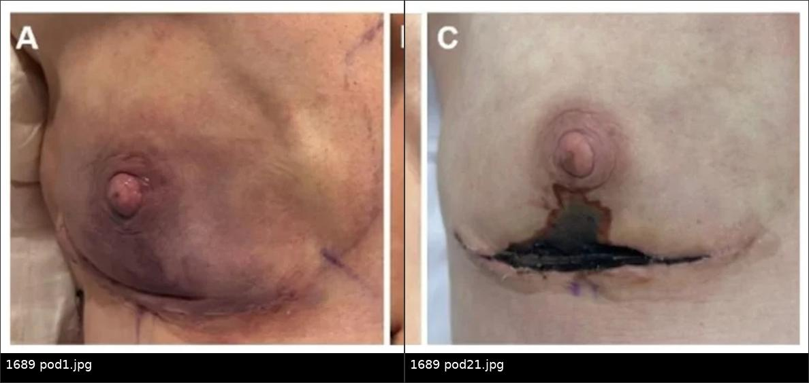
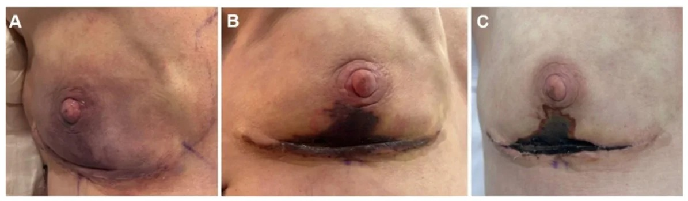
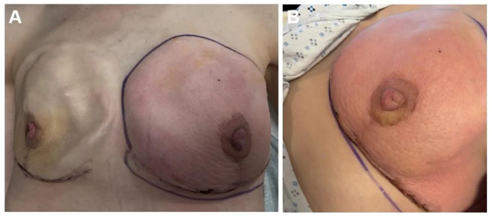
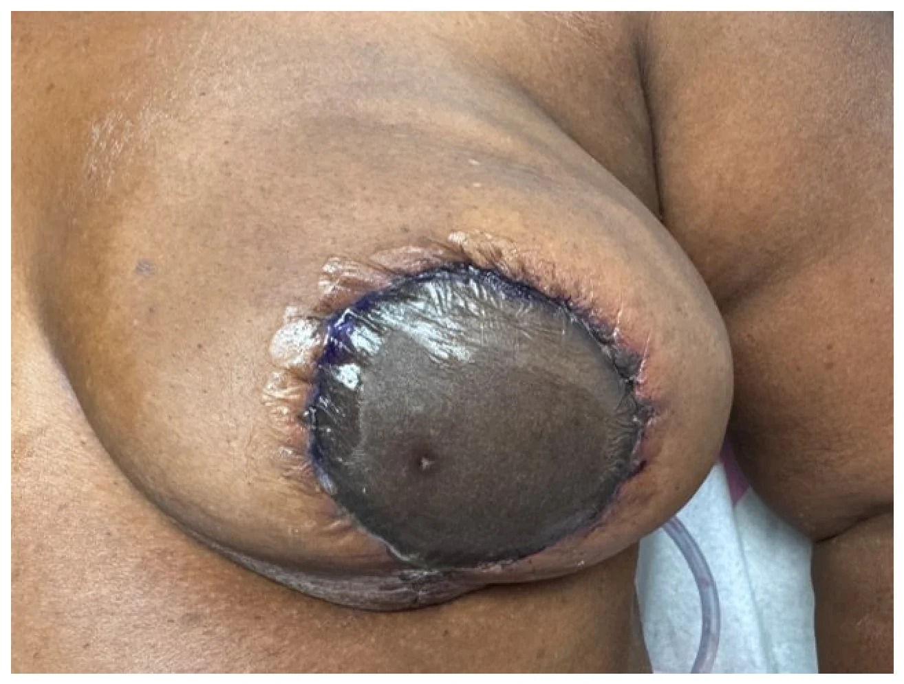

1689 — Nhiễm trùng vạt tự thân & hoại tử vạt sau tái tạo vú / Infection and necrosis of autologous breast flaps
Tags: pattern:nhiem-trung pattern:hoai-tu-vat pattern:hoai-tu-mo pattern:tu-dich pattern:viem-mo-te-bao pattern:mat-tuoi-mau vung:vu vung:thanh-nguc protocol:sieu-am-vu protocol:CT-nguc protocol:MRI-vu protocol:choc-hut score:Clavien-Dindo incidentaloma:tu-dich-sau-vat
Mức chắc chắn (certainty): tổng hợp y văn (literature synthesis) — dựa trên 1 tổng quan hệ thống về hoại tử vạt (68 nghiên cứu, PMC12376823), 1 phân tích gộp nhiễm trùng vùng mổ (1.400 vạt, PMC10355167), 1 đoàn hệ tái thám sát vạt tự do (PMC13563678), 2 phân tích gộp về ICG và xạ trị (PMC12281818, PMC13315313), và 1 tổng quan hình ảnh biến chứng tái tạo tức thì (PMC13607601).
1. Tổng quan — vì sao vạt tự thân vừa dễ nhiễm vừa dễ hoại tử
- Hai vạt chồng lên một vết mổ: vú tái tạo bằng vạt tự thân gồm vạt da – mỡ của bệnh nhân (skin paddle) được nuôi bằng một cuống mạch nối vi phẫu, áp vào vạt da thành ngực còn lại sau cắt tuyến (mastectomy skin flap) — vạt thứ hai chỉ nuôi bằng tuần hoàn dưới da ngẫu nhiên. Hai vạt gặp nhau ở đường khâu T, nơi mô mỡ lộ ra, dịch tiết tích lại và vi khuẩn từ nang lông/ống tuyến có sẵn đường vào.
- Vì sao thiếu máu lại thành hoại tử mỡ vô khuẩn: tế bào mỡ chết do thiếu oxy → giải phóng triglyceride → đại thực bào dọn dẹp, tạo nang dầu (oil cyst) và vôi hóa xà phòng ở vỏ xơ, không có vi khuẩn. Vì vậy hoại tử mỡ điển hình không sốt, không tăng CRP nhiều, không mủ; nhưng mô chết là môi trường nuôi cấy — khi bội nhiễm thì hoại tử mỡ "lành" biến thành áp-xe.
- Vì sao nhiễm trùng bắt chước ứ trệ tĩnh mạch: cả hai đều làm da đỏ, căng, đau. Ứ trệ tĩnh mạch làm tăng áp lực mao mạch → hồng cầu thoát ra mô → da tím sẫm, chảy máu đen khi chích; thiếu máu động mạch → da nhợt, lạnh, không chảy máu. Nhiệt độ và màu da phân biệt nhanh hơn xét nghiệm, nhưng không thay thế được đánh giá mạch và siêu âm Doppler.
- TẠI SAO CT phân biệt được dịch – mỡ – khí: dịch (nước) 0–20 HU, mỡ −50 đến −100 HU, máu tụ cấp 50–70 HU, khí −1.000 HU. Khí trong mô mềm quanh vạt không phải khí trong ruột thừa lưu — đó là dấu hiệu nhiễm trùng sinh khí/viêm cân mạc hoại tử, cần mổ ngay.
- TẠI SAO MRI T1 fat-sat là chốt của hoại tử mỡ: mỡ có T1 ngắn nên rất sáng; xung ức chế mỡ đưa tín hiệu mỡ về 0 → lõi nang dầu tối, trong khi vỏ xơ (collagen ít proton tự do) vẫn tối trên T2 và ngấm thuốc ở thì muộn. Áp-xe thì ngược lại: lòng dịch tăng tín hiệu T2, hạn chế khuếch tán (DWI sáng/ADC thấp) và vỏ dày ngấm thuốc.
- Số liệu nằm lòng:
- Nhiễm trùng vùng mổ (surgical site infection, SSI) sau tái tạo vú tự thân: 7,2% gộp trên 1.400 vạt; 6,6% khi kháng sinh dự phòng ≤ 24 giờ so với 8,1% khi > 24 giờ, OR 1,434 (95% CI 0,906–2,269), p = 0,124, I² = 0% → kéo dài kháng sinh dự phòng không giảm SSI (PMC10355167).
- Tái thám sát (re-exploration) vạt tự do: 5–14%; thất bại vạt 2–5%; phần lớn huyết khối động mạch/tĩnh mạch xảy ra trong 48 giờ đầu (PMC13563678).
- Cửa sổ cứu vạt hẹp: tỉ lệ cứu sống giảm từ ~62% xuống ~21% khi phát hiện thiếu tưới máu sau 16 giờ (PMC13563678 dẫn Yang 2007).
- Hoại tử mỡ sau vạt: 12,5–23,6% (4 nghiên cứu); sau ghép mỡ tự thân: 7,3–82,9% (PMC13287354, bài 1687).
- Ngưỡng mổ lại: diện hoại tử da > 10 cm² là mốc quyết định phẫu thuật; vết thương > 3 tuần mới liền làm tăng nguy cơ sẹo biến dạng (PMC12376823).
- ICG huỳnh quang trong mổ: giảm hoại tử da OR 0,60 (0,44–0,81), hoại tử nặng OR 0,37 (0,22–0,63), mổ lại OR 0,49 (0,33–0,73) trên 1.252 bệnh nhân (PMC12281818).
- Xạ trị làm nặng thêm: 4.447 bệnh nhân/4.478 vạt DIEP — mất một phần vạt RR 1,69 (0,99–2,90), sửa vết thương RR 1,23 (1,01–1,50), xạ trước DIEP làm rối loạn liền thương RR 1,62 (1,06–2,49); không khác biệt có ý nghĩa về mất toàn bộ vạt hay nhiễm trùng diện nhận (PMC13315313).
- Theo dõi: kiểm tra vạt mỗi 1–4 giờ trong 1–5 ngày đầu; huyết khối hay gặp < 48 giờ (PMC13563678).
2. Mẫu hình + chẩn đoán phân biệt theo thời điểm và theo khoang (Gamut)
- Mẫu hình cốt lõi — hỏi 3 câu trước khi gọi tên:
- Bao nhiêu ngày sau mổ? (0–3 ngày = mạch máu; 3–14 ngày = nhiễm trùng; 2 tuần–6 tháng = hoại tử mỡ; > 6 tháng = tái phát/u).
- Có dịch khu trú không? (siêu âm: ổ trống âm có vách, cặn; CT: ổ giảm tỷ trọng có vỏ).
- Có khí hoặc da chết toàn bộ không? (khí → mổ ngay; da đen, lạnh, cứng → hoại tử toàn bộ).
- Gamut theo thời điểm:
- POD 0–3: ứ trệ tĩnh mạch (vạt tím, chảy máu đen), thiếu máu động mạch (vạt nhợt, lạnh), máu tụ chèn ép cuống, xoắn/gập cuống.
- POD 3–14: viêm mô tế bào (cellulitis), áp-xe vạt/diện nhận, nhiễm trùng mảnh ghép da, nhiễm trùng màng lưới nhân tạo (ADM) với đường rò nhỏ, nhiễm trùng vùng cho (bụng).
- Tuần 2 – tháng 6: hoại tử mỡ, nang dầu, nhiễm trùng muộn do chỉ khâu/sinus, tụ dịch mạn.
- Sau 6 tháng: vôi hóa hoại tử mỡ, tái phát ung thư tại giường vạt, xơ hóa do xạ, (nếu có implant) BIA-ALCL.
- Gamut theo khoang:
- Vạt da bệnh nhân (skin paddle): hoại tử bờ, tím do ứ trệ, nhiễm trùng bề mặt.
- Vạt da thành ngực (mastectomy skin flap): hoại tử thiếu máu, thường ở đường khâu chữ T và quanh núm.
- Lớp mỡ – diện nhận: hoại tử mỡ, áp-xe sâu, tụ dịch.
- ADM/implant (nếu tái tạo hỗn hợp): nhiễm ADM, dò dịch, nhiễm implant.
- Vùng cho bụng: nhiễm vết mổ, tụ dịch, thoát vị — nhưng không gây sốt cao đơn thuần mà không có dấu hiệu tại chỗ.
3. Bảng so sánh phân biệt (ma trận đối chiếu)
| Thực thể (entity) | Hình ảnh điển hình (US/CT/MRI) | Chốt vào (rule-in) | Chốt loại (rule-out) | Gợi ý xác nhận |
|---|---|---|---|---|
| Áp-xe vạt / nhiễm trùng vạt | US: ổ trống âm có cặn/vách, dày vỏ, tăng sinh mạch quanh; CT: ổ giảm tỷ trọng, vỏ ngấm thuốc, ± khí; MRI: DWI sáng/ADC thấp, vỏ dày ngấm | Sốt + đau + đỏ khu trú + ổ dịch có vỏ; cấy dịch dương | Không có ổ dịch, không sốt, không hạn chế khuếch tán → không phải áp-xe | Chọc hút dưới siêu âm + Gram/cấy hiếu-kỵ khí; dẫn lưu |
| Hoại tử mỡ vô khuẩn | US: khối đồng âm mỡ, không mạch; CT: −50 đến −100 HU, vỏ mỏng; MRI: tối T1 fat-sat, không ngấm trung tâm, vỏ xơ mỏng | Đúng vị trí vạt/ghép mỡ + không sốt + không ngấm trung tâm + ổn định/teo dần | Vỏ dày không đều + ngấm kiểu khối + DWI hạn chế → không loại trừ áp-xe/tái phát | So phim cũ; MRI; không sinh thiết nang dầu điển hình |
| Seroma | US: trống âm, có thể có vách mảnh, không mạch; CT: dịch 0–20 HU; MRI: rất sáng T2, tối T1, không ngấm | Xuất hiện 1–3 tuần sau mổ, không sốt, dịch trong; hút ra dịch vàng | Vỏ dày + cặn + khí + sốt → không phải seroma đơn thuần | Siêu âm; hút chẩn đoán (đếm tế bào, cấy) |
| Viêm mô tế bào (cellulitis) | US: dày da – tăng hồi âm dưới da, không ổ dịch; CT: dày da, phù dưới da, không vỏ | Đỏ lan tỏa, ấm, sốt, không ổ dịch; đáp ứng kháng sinh 48–72 giờ | Có ổ dịch/khí → đã chuyển sang áp-xe/hoại tử | Theo dõi 24–48 giờ; siêu âm lặp |
| Ứ trệ tĩnh mạch (venous congestion) | Doppler: phổ tĩnh mạch mất/đảo, vạt tím; CT/MRI không cần nếu lâm sàng rõ | Vạt tím sẫm, căng, chảy máu đen, mao mạch đầy nhanh, không sốt lúc đầu | Vạt nhợt, lạnh, không chảy máu → thiếu máu động mạch | Mổ lại ngay (tháo chỉ, nới cuống, kiểm tra nối); không chờ hình ảnh |
| Thiếu máu động mạch | Doppler: mất phổ động mạch, vạt nhợt/lạnh; CTA: tắc cuống | Vạt nhợt, lạnh, không chảy máu khi chích, không đầy mao mạch | Vạt hồng, ấm, chảy máu đỏ → không phải thiếu máu động mạch | CTA/duplex khẩn nếu chưa mổ ngay; mổ lại < 6 giờ càng tốt |
| Máu tụ (hematoma) | US: hồi âm hỗn hợp, có mức; CT: 50–70 HU, tăng tỷ trọng so với mỡ; MRI: T1 sáng bán cấp | Sưng căng nhanh vài giờ, đau, thiếu máu da thứ phát, không sốt | Tối T1 fat-sat + −50 đến −100 HU → mỡ, không phải máu | Siêu âm cấp; dẫn lưu nếu chèn ép |
| Tái phát ung thư tại vạt | US: khối giảm hồi âm, bờ gai, có mạch; MRI: ngấm kiểu khối, ADC thấp, ± co kéo da | Khối mới/to lên sau 6 tháng + ngấm thuốc + ADC thấp | Lõi mỡ tối T1 fat-sat, không ngấm → hoại tử mỡ | Core biopsy có clip; đối chiếu trường xạ |
| Viêm cân mạc hoại tử (necrotizing fasciitis) | CT: khí trong mô mềm, dày cân, không ngấm cân; US: khí dạng "bóng bẩn" | Đau ngoài mức, sốc nhiễm trùng, khí trong mô mềm, da hoại tử lan nhanh | Không khí, đau khu trú, không độc → cellulitis | Mổ cắt lọc ngay + cấy; không chờ MRI |

Trái: POD 1 — da vạt tím sẫm, ứ trệ tĩnh mạch. Phải: POD 21 — vùng hoại tử toàn bộ đã ranh giới rõ, phải mổ cắt lọc. Nguồn: Coyle L và cs, J Clin Med 2026, PMC13607601 Fig. 3A + 3C, CC BY 4.0. Ảnh ghép letterbox, cùng một bệnh nhân.Ba dấu hiệu đọc trên ảnh lâm sàng (trước khi cần đến CĐHA)
- Màu: tím sẫm = ứ trệ; nhợt trắng = thiếu máu động mạch; đen khô = hoại tử toàn bộ; đỏ lan = viêm.
- Nhiệt độ và mao mạch: vạt ấm + mao mạch đầy nhanh = còn tưới máu; lạnh + mao mạch > 3 giây = nguy cơ.
- Chảy máu khi chích kim 18 G ở bờ vạt: máu đỏ tươi = động mạch còn; máu đen chảy chậm = ứ trệ; không chảy = thiếu máu nặng. Đây là nghiệm pháp tại giường, không thay thế Doppler.
4. Protocol chụp + phân độ và thuật toán xử trí
- Siêu âm là bước 1 (đầu dò thẳng 12–15 MHz): đánh giá da – mô dưới da – lớp mỡ vạt – diện nhận, tìm ổ dịch, vách, cặn, khí; Doppler màu xem mạch trong vạt và quanh ổ dịch. So sánh với bên đối diện/vùng lành.
- CT có cản quang khi: sốt + đau không rõ ổ, nghi dịch sâu/ADM, nghi khí trong mô mềm, hoặc cần xem cuống mạch. Lát 1–2 mm, cửa sổ mô mềm + xương, dựng MPR theo trục cuống.
- CTA khi nghi huyết khối cuống mà chưa mổ ngay: tắc/không thấy thuốc ở động mạch hoặc tĩnh mạch nối; nhưng không được trì hoãn mổ lại để chụp nếu vạt đang tím/nhợt rõ.
- MRI vú (T1, T2 fat-sat, DWI/ADC, T1 sau tiêm): dùng cho khối không rõ sau 6 tháng, nghi tái phát, hoặc phân biệt hoại tử mỡ – áp-xe – u. Hoại tử mỡ = không ngấm trung tâm; áp-xe = vỏ dày + hạn chế khuếch tán; tái phát = ngấm kiểu khối + ADC thấp.
- Chọc hút dưới siêu âm là vừa chẩn đoán vừa điều trị với ổ dịch: gửi Gram, cấy hiếu khí + kỵ khí, đếm tế bào; nếu mủ đặc/quánh → đặt dẫn lưu. Không tiêm corticoid vào ổ dịch nghi nhiễm.
- Kháng sinh: dự phòng ≤ 24 giờ (cefazolin 2 g, thêm metronidazole nếu vạt lấy từ bụng) — bằng chứng không ủng hộ kéo dài (PMC10355167); nhiễm trùng da không ổ dịch: kháng sinh theo kinh nghiệm 7–10 ngày; áp-xe: dẫn lưu + kháng sinh theo cấy, không chỉ kháng sinh.
- Phân độ biến chứng: Clavien-Dindo — độ I–II (chăm sóc tại giường/kháng sinh), độ IIIa (can thiệp không gây mê: chọc hút/dẫn lưu), độ IIIb (mổ lại: cắt lọc, sửa vạt), độ IV (suy cơ quan), độ V (tử vong).
- Ngưỡng mổ lại tại giường: diện hoại tử > 10 cm², hoại tử toàn bộ độ dày, hoặc vết thương > 3 tuần không liền → cắt lọc + đóng lại để tránh sẹo biến dạng và trì hoãn hóa/xạ (PMC12376823).
flowchart TD
A[Vạt đỏ đau sốt sau mổ] --> B{Vạt tím hay nhợt lạnh?}
B -->|Tím sẫm, chảy máu đen| C[Ứ trệ tĩnh mạch: mổ lại ngay]
B -->|Nhợt, lạnh, không chảy máu| D[Thiếu máu động mạch: mổ lại ngay]
B -->|Hồng, ấm, chỉ đỏ da| E[Siêu âm Doppler]
E --> F{Có ổ dịch?}
F -->|Không| G[Cellulitis: kháng sinh 7-10 ngày, khám lại 48 giờ]
F -->|Có| H[Chọc hút: Gram, cấy, đếm tế bào]
H --> I{Dịch mủ hay cặn?}
I -->|Không| J[Seroma: hút, theo dõi, cấy âm thì không kháng sinh]
I -->|Có| K[Áp-xe: dẫn lưu + kháng sinh theo cấy]
K --> L{Sốt kéo dài, khí trong mô mềm?}
L -->|Có| M[CT cản quang + mổ cắt lọc]
L -->|Không| N[Theo dõi 48-72 giờ, siêu âm lặp]
G --> O{Không đáp ứng 48-72 giờ?}
O -->|Có| P[Siêu âm/CT lại: loại trừ áp-xe, tái phát, u]
O -->|Không| Q[Tiếp tục kháng sinh]
5. Biến thể bình thường và cạm bẫy
- Seroma "giả cellulitis": tụ dịch dưới vạt gây đỏ, căng, đau nhưng không sốt; siêu âm thấy ổ trống âm — hút ra là hết đau, không cần kháng sinh kéo dài. Ảnh Fig. 6 của PMC13607601 là ví dụ điển hình.
- Hoại tử mỡ sau ghép mỡ: khối chắc, có thể co kéo da và vôi hóa cụm — dễ bị chấm BI-RADS 4. Chốt an toàn là không ngấm trung tâm trên MRI và ổn định/teo dần; nhưng khối mới, to lên, ngấm thuốc vẫn phải core biopsy (bài 1687).
- Vạt da đen khô: da chết không đồng nghĩa nhiễm trùng — nhưng là môi trường cho vi khuẩn; cần cắt lọc sớm khi đã ranh giới, tránh chờ tự bong (nguy cơ nhiễm trùng sâu, mất vạt).
- Nhiễm ADM: biểu hiện đường rò nhỏ, chảy dịch tái diễn ở bờ dưới vạt; trong mổ bơm xanh methylene vào đường rò thấy ADM bắt màu lan tỏa → phải lấy bỏ ADM + rửa (PMC13607601 Fig. 5). Đây là bẫy hay bị bỏ qua vì siêu âm chỉ thấy "dịch ít".
- Không phải cứ đỏ là nhiễm: vạt sau xạ có thể đỏ mạn do giãn mạch dưới da (telangiectasia) và xơ hóa; đỏ mới, lan nhanh, ấm, đau mới đáng lo.
- Tái phát ung thư "kiểu viêm": đỏ da khu trú không đáp ứng kháng sinh sau 1–2 tuần ở vú đã tái tạo → chụp MRI + sinh thiết da/dưới da, đừng tiếp tục kháng sinh mù.
- Khí trong mô mềm không phải lúc nào cũng là nhiễm trùng: khí có thể vào từ đường kim, dẫn lưu, hoặc hở vết thương; nhưng khí lan theo cân, kèm đau ngoài mức và độc = viêm cân mạc hoại tử cho đến khi loại trừ — mổ ngay.
6. Tự lượng giá — Blind Quiz
Ca 1 — Nữ 48 tuổi, sau cắt tuyến bảo tồn núm + đặt túi giãn mô. POD 1 da vạt tím; POD 12 sẫm màu; POD 21 vùng đen ranh giới rõ.

- Gợi ý: ba mốc ảnh là POD 1 – POD 12 – POD 21.
- Câu hỏi: Dấu hiệu ở POD 1 là gì? Vì sao đến POD 21 lại phải mổ? Phân biệt với nhiễm trùng dựa vào đâu?
Bấm để hiện đáp án (findings + chẩn đoán)
- Findings: POD 1 tím sẫm toàn bộ vạt da, căng = ứ trệ tĩnh mạch; POD 12 sẫm màu + ranh giới = hoại tử một phần độ dày; POD 21 vùng đen, khô, ranh giới rõ = hoại tử toàn bộ độ dày, cần mổ cắt lọc và đóng lại.
- Chẩn đoán: hoại tử da vạt do thiếu tưới máu, không phải áp-xe (không ổ dịch, không sốt trong mô tả). Điểm chốt: màu da + nhiệt độ + chảy máu khi chích, không chờ cấy.
- Nguồn ảnh: Coyle L và cs, J Clin Med 2026, PMC13607601 Fig. 3A–C, CC BY 4.0.
Ca 2 — Nữ 52 tuổi, 10 ngày sau cắt tuyến bảo tồn núm + tái tạo bằng túi giãn mô: đỏ toàn bộ vú, đau, sốt, CRP tăng.

- Câu hỏi: Hình ảnh gợi ý gì? Cần làm gì tiếp theo? Khi nào phải lấy bỏ túi?
Bấm để hiện đáp án
- Findings: đỏ lan tỏa toàn bộ vú + đau + sốt = viêm mô tế bào (cellulitis) quanh túi giãn mô; không thấy ổ dịch khu trú trên ảnh lâm sàng.
- Diễn tiến nguồn: bệnh nhân không đáp ứng kháng sinh, phải rửa mổ + lấy bỏ túi giãn mô; cấy dịch mọc E. coli.
- Bài học: cellulitis quanh implant/túi giãn mô có thể do vi khuẩn đường ruột, không chỉ S. aureus; không đáp ứng 48–72 giờ → chụp lại + cân nhắc rửa và lấy bỏ thiết bị.
- Nguồn ảnh: Coyle L và cs, J Clin Med 2026, PMC13607601 Fig. 4A–B, CC BY 4.0.
Ca 3 — Nữ 57 tuổi, 4 ngày sau DIEP: vạt da bụng đen, lạnh, cứng, không chảy máu khi chích; bệnh nhân sốt nhẹ.

- Câu hỏi: Chẩn đoán? Có nên chờ kháng sinh? Xử trí?
Bấm để hiện đáp án
- Findings: da vạt đen, lạnh, cứng, không tưới máu = mất toàn bộ vạt (total flap loss); sốt nhẹ có thể do hoại tử mô, không loại trừ nhiễm trùng.
- Xử trí: mổ lại lấy bỏ vạt; nếu thấy huyết khối khi mổ có thể dùng tPA đường động mạch hoặc heparin toàn thân 4–7 ngày sau mổ lại (thời gian neo nội mạc hóa miệng nối ~6 ngày).
- Bài học: vạt đen + lạnh + cứng là chỉ định mổ, không phải chỉ định kháng sinh; chờ đợi làm mất cơ hội cứu vạt và tăng nhiễm trùng.
- Nguồn ảnh: Coyle L và cs, J Clin Med 2026, PMC13607601 Fig. 8, CC BY 4.0.
Bài liên quan chéo
- 1687 – Hoại tử mỡ sau tái tạo vú, vạt & ghép mỡ (nang dầu, vôi hóa viền, BI-RADS)
- 1686 – Hạch nách chứa silicone & siliconoma
- 1688 – Siliconoma lan xa ngoài vùng vú
- 1656 – Rách vỏ implant & gel bleed
- 1655 – Ung thư biểu mô vảy trong bao implant
- 516 – Hình ảnh vú sau điều trị
- 936 – Phản ứng da muộn nặng sau cản quang
Không dùng để chẩn đoán độc lập khi chưa có người hướng dẫn.